10 — Real dynamic data: cardiac cine
Download this tutorial as a Jupyter notebook (with NotebookUtils.jl next to it).
The dynamic machinery of tutorial 7 on real scanner data: a fully sampled 1.5 T cardiac cine from OCMR, retrospectively undersampled and reconstructed with temporal, low-rank and low-rank-plus-sparse models.
This tutorial is also the place where the comparison is done honestly. A table of methods each run at a λ someone once picked says nothing: half of what looks like "method A beats method B" is really "λ_A happened to suit this dataset". So every method here gets its own small λ sweep, is shown at its own best setting, and is scored twice — once globally, and once on the pixels that actually move, which is the only place the temporal models can differ from the frame-by-frame ones.
Data terms. OCMR has its own data-use agreement and asks that you cite Chen et al., OCMR (v1.0) — Open-Access Multi-Coil k-Space Dataset for Cardiovascular Magnetic Resonance Imaging, arXiv:2008.03410 (2020). The first run downloads ~200 MB.
Runtime. This is by far the slowest tutorial in the set: about ten to fifteen minutes end to end (measured without the timing table of section 8: 12 min with two threads, 8 min with four; the table adds one to three minutes), most of it in the λ sweep of section 6 (forty-six reconstructions of a 256 × 208 × 19 cine) and the rest in the timing table of section 8. Drop entries from
sweeps, or lowermaxit, if you want it faster — the conclusions in section 11 survive a coarser sweep, they just stop being defensible to the decimal place.
Contents
- From ISMRMRD file to
AcquisitionInfoin one call - Readout oversampling and coil compression
- Sensitivity maps
- The reference, and which frame to look at
- Two retrospective sampling patterns
- Choosing λ per method
- The comparison, at each method's best λ
- Timing, measured properly
- The temporal profile
- Real non-Cartesian data: a spiral real-time scan
- What actually wins, and when
using .NotebookUtils
using Ristretto
using MRITestData
using MIRTjim: jim
using Plots
using NamedDims
using FFTW
using LinearAlgebra
using Statistics
using Random: MersenneTwister, randperm
using Printf
using Random
Random.seed!(0);1. From ISMRMRD file to AcquisitionInfo in one call
AcquisitionInfo(::MRIBase.RawAcquisitionData) (the package extension that loading MRIBase activates — MRITestData already does) reads the ISMRMRD header and assembles the array. On this file it has three things to get right that hand-written assembly usually does not:
- A cardiac phase axis. Every encoding counter that varies across the profiles becomes a named batch dimension;
head.idx.phasebecomes:time. Counters that never vary contribute nothing, which is why this single-slice cine comes back without a:zaxis. - An asymmetric echo. Only a contiguous block of the 512-sample encoded readout was acquired, and its k = 0 sits at
head.center_sample, not at the middle of the block. The constructor places each sample atraw_index - center + N ÷ 2and reports the gap as asubsamplingrange rather than silently sliding the image alongx. - The image-domain convention. A scanner images an object centred in the FOV, whereas Ristretto's default is the plain-DFT one (image origin at index 1). The constructor sets
shifted_image_dimson both spatial axes, so nofftshiftappears anywhere in this tutorial — without it every frame would come out rolled by half the FOV.
if MRITestData.get_download_path() === nothing
MRITestData.set_download_path!(:cache)
end
entry = MRITestData.dataset(MRITestData.OCMR_SOURCE, "fs_0001_1_5T")
raw = MRITestData.load_raw(entry)
acq_enc = AcquisitionInfo(raw)
println(acq_enc)
println()
println("dimensions: ", dimnames(acq_enc.kspace_data), " = ", size(acq_enc.kspace_data))
println("encoded matrix: ", acq_enc.image_size)
println("reconstructed to: ", Int.(raw.params["reconSize"]))
println("readout coverage: ", acq_enc.subsampling[1], " of 1:", acq_enc.image_size[1])
println("cardiac phases: ", size(acq_enc.kspace_data, :time))CartesianAcquisitionInfo(kspace_data=Array{ComplexF32}<kx: 404, ky: 208, coil: 15, time: 19>, encoding=2D, image_size=512×208, subsampling=(109:512, :), shifted_image_dims=(x,y))
dimensions: (:kx, :ky, :coil, :time) = (404, 208, 15, 19)
encoded matrix: (512, 208)
reconstructed to: [256, 208, 1]
readout coverage: 109:512 of 1:512
cardiac phases: 19
2. Readout oversampling and coil compression
Removing the readout oversampling
The encoded matrix is 512 wide but reconSize is 256, and encodedFOV[1] is twice reconFOV[1]: the readout is 2× oversampled, which every Cartesian scanner does because oversampling along the readout is free (it costs sampling rate, not time) and it moves out-of-FOV anatomy out of the way instead of folding it in.
Removing it is a crop in the image domain, and it is exact: nothing folds along a fully sampled axis, so the discarded half is simply anatomy outside the prescribed FOV. Doing it first halves the size of every reconstruction below.
The round trip is worth reading closely, because it is the one place in these two tutorials where the FFT-shift convention has to be written out by hand. reconstruct hands back centred images (shifted_image_dims), so going back to centred k-space is fftshift ∘ fft ∘ ifftshift along both spatial axes — not a bare fft, which would treat array index 1 as the origin.
coil_enc = reconstruct(acq_enc) # no maps => one image per coil
nx_recon = Int(raw.params["reconSize"][1])
x_lo = (size(coil_enc, :x) - nx_recon) ÷ 2 + 1
coil_cropped = unname(coil_enc)[x_lo:(x_lo + nx_recon - 1), :, :, :]
ksp_cine = ComplexF32.(fftshift(fft(ifftshift(coil_cropped, (1, 2)), (1, 2)), (1, 2)))
acq_cine = AcquisitionInfo(
NamedDimsArray{(:kx, :ky, :coil, :time)}(ksp_cine);
is3D = false, shifted_image_dims = (:x, :y),
)
println("encoded ", size(acq_enc.kspace_data), " -> cine ", size(acq_cine.kspace_data))
# The crop is a projection, so re-reconstructing must return exactly what we cropped.
round_trip = unname(reconstruct(acq_cine))
println("round-trip error: ", norm(round_trip - coil_cropped) / norm(coil_cropped))encoded (404, 208, 15, 19) -> cine (256, 208, 15, 19)
round-trip error: 2.048982e-7
# Fifteen channels is more than this problem needs; compressing to six virtual coils cuts the
# cost of every iterative reconstruction below by more than half at no visible cost in quality.
acq_cine, _ = compress_coils(acq_cine, 6; method = SVDCompression())
ksp_cine = unname(acq_cine.kspace_data)
nkx, nky, ncoil, nframes = size(ksp_cine)
println("after coil compression: ", size(ksp_cine))after coil compression: (256, 208, 6, 19)
3. Sensitivity maps
Calibrate from a single frame, not the time average: cardiac motion smears a temporally averaged calibration region and corrupts the ESPIRiT maps. (Handing the whole cine to estimate_sensitivities would not average it — a :time axis on Cartesian k-space is a batch dimension, so every frame would get its own maps — but that is twenty calibrations to carry through the rest of the tutorial, each from one frame's worth of signal.)
Take the frame out with the copy constructor rather than by slicing the bare array. Sensitivity maps live in the image domain, so they inherit whatever FFT-shift convention they were estimated under; calibrating from a raw NamedDimsArray would silently use Ristretto's default convention and hand back maps rolled by half the FOV relative to this acquisition. Going through the AcquisitionInfo carries shifted_image_dims along and cannot get that wrong.
acq_frame1 = AcquisitionInfo(acq_cine; kspace_data = acq_cine.kspace_data[time = 1])
smaps = estimate_sensitivities(
acq_frame1; method = ESPIRiT(calib_size = 24, kernel_size = 6)
).sensitivity_maps
println("maps: ", size(smaps), " ", dimnames(smaps))
jim(abs.(unname(smaps)); title = "ESPIRiT maps (frame 1)", nrow = 2, size = (1000, 500))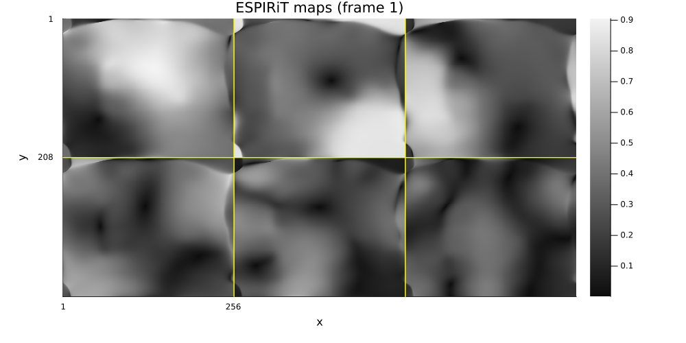
4. The reference, and which frame to look at
With the maps in hand the reference is the adjoint reconstruction of the fully sampled data with those maps, $\hat{x} = \sum_c S_c^H \mathcal{F}^H y_c$ — the sensitivity-weighted coil combination, which is the SNR-optimal one and the same operation every accelerated reconstruction below performs on less data. A root-sum-of-squares combination would also be a legitimate reference, but it is a different estimator: it discards phase, it has a positive noise bias in low-signal pixels, and it does not use the maps, so every score against it would carry a constant penalty that has nothing to do with the method being scored. Measuring against the combination the methods themselves use isolates what the acceleration and the prior did.
This is why the reference comes after the maps rather than in section 2: it depends on them.
acq_ref = AcquisitionInfo(acq_cine; sensitivity_maps = smaps)
reference = abs.(unname(reconstruct(acq_ref)))
println("reference: ", size(reference), " (ESPIRiT maps + adjoint)")reference: (256, 208, 19) (ESPIRiT maps + adjoint)
Which frame to look at
A cine has no "most representative" frame, but it does have a most informative one: the frame furthest from the temporal mean, i.e. the one where the myocardium has moved the most. That is where an over-smoothed temporal reconstruction gives itself away, so every single-frame picture below uses it rather than an arbitrary index. (This dataset is a single slice — the ISMRMRD slice counter never varies — so there is no slice to choose, only a frame.)
temporal_mean = mean(reference; dims = 3)
frame_deviation = [norm(reference[:, :, t] - temporal_mean[:, :, 1]) for t in 1:nframes]
frame = argmax(frame_deviation)
println(
"most dynamic frame: ", frame, " of ", nframes,
" (deviation from the temporal mean, normalized: ",
join(round.(frame_deviation ./ maximum(frame_deviation); digits = 2), " "), ")"
)
animate_slices(
reference; dim = 3, fps = 8, size = (420, 420),
title = t -> "reference, frame $t of $nframes" * (t == frame ? " (most dynamic)" : ""),
)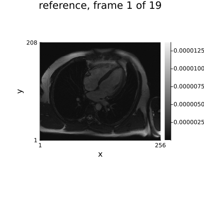
5. Two retrospective sampling patterns
The sampling pattern decides in advance how much a temporal model can possibly gain, so this tutorial uses two of them at the same net acceleration:
- Fixed — uniform R = 3 plus a fully sampled centre block, the same ky lines at every frame. The aliasing is then identical in every frame, i.e. perfectly coherent in time. A temporal regularizer sees a time series whose artefact does not change with time, and cannot separate the artefact from the anatomy by looking along time.
- Interleaved — the fully sampled centre block in every frame, and the remaining lines drawn at random from the outer region, independently per frame. Same number of lines per frame, same net acceleration, but the outer aliasing now changes frame to frame and the time average of the acquired lines covers all of ky.
The centre stays fixed on purpose, and it is the part that is easy to get wrong. It is what carries the contrast and the coil calibration, so every frame needs it; randomising it as well would leave individual frames without a low-frequency estimate and cost more than the incoherence gains. What a temporal prior needs incoherent is the outer k-space, where the aliasing lives — which is exactly the split below.
Ristretto expresses a per-frame pattern as a Vector of subsampling specs, one per batch element — [(:, mask_t) for t in 1:nframes] — alongside a fixed-shape k-space array, which is why both masks are built with the same line count.
R, acs = 3, 8
center = (nky ÷ 2 - acs):(nky ÷ 2 + acs)
mask_fixed = falses(nky)
mask_fixed[1:R:nky] .= true
mask_fixed[center] .= true
nlines = sum(mask_fixed)
# The interleaved patterns: the centre block in every frame, plus enough randomly chosen outer
# lines to reach the same total. Equal counts per frame are a requirement, not a nicety — the
# simulated k-space is one dense array, so every frame has to contribute the same number of
# lines.
outer = setdiff(1:nky, center)
n_outer = nlines - length(center)
rng = MersenneTwister(0)
masks_interleaved = map(1:nframes) do _
m = falses(nky)
m[center] .= true
m[outer[randperm(rng, length(outer))[1:n_outer]]] .= true
m
end
println(
"lines per frame: ", nlines, " of ", nky,
" (net acceleration ", round(nky / nlines, digits = 2), "x)"
)
println(
"lines per frame, interleaved: ", unique(sum.(masks_interleaved)),
" union over time: ", sum(reduce(.|, masks_interleaved)), " of ", nky
)
# Both acquisitions are built with the copy constructor, `AcquisitionInfo(info; field = value)`,
# so `image_size`, `is3D` and — the one that bites — `shifted_image_dims` are inherited rather
# than retyped.
acq_fixed = AcquisitionInfo(
acq_cine;
kspace_data = acq_cine.kspace_data[ky = mask_fixed],
subsampling = (:, mask_fixed), sensitivity_maps = smaps,
)
ksp_interleaved = similar(ksp_cine, nkx, nlines, ncoil, nframes)
for t in 1:nframes
ksp_interleaved[:, :, :, t] .= ksp_cine[:, masks_interleaved[t], :, t]
end
acq_interleaved = AcquisitionInfo(
acq_cine;
kspace_data = NamedDimsArray{(:kx, :ky, :coil, :time)}(ksp_interleaved),
subsampling = [(:, m) for m in masks_interleaved], sensitivity_maps = smaps,
)
println(acq_interleaved)lines per frame: 81 of 208 (net acceleration 2.57x)
lines per frame, interleaved: [81] union over time: 208 of 208
CartesianAcquisitionInfo(kspace_data=Array{ComplexF32}<kx: 256, ky: 81, coil: 6, time: 19>, encoding=2D, image_size=256×208, sensitivity_maps=ComplexF32<256×208×6>, subsampling=19×(:, Vector{Bool}<208>), shifted_image_dims=(x,y))
# What the two patterns look like as (ky, frame) maps, and what their aliasing does to each frame.
pattern_fixed = repeat(mask_fixed, 1, nframes)
pattern_interleaved = reduce(hcat, masks_interleaved)
x_zf_fixed = reconstruct(acq_fixed)
x_zf_interleaved = reconstruct(acq_interleaved)
zf_fixed_mag = abs.(unname(x_zf_fixed))
zf_interleaved_mag = abs.(unname(x_zf_interleaved))
# One colour scale over both series and every frame: the two zero-filled images are on the same
# scale by construction, and a per-frame scale would make the animation flicker.
cl_zf = (0.0, max(maximum(zf_fixed_mag), maximum(zf_interleaved_mag)))
# The point of the interleaved pattern is that it changes from frame to frame, which a static
# (ky, frame) map states but does not show. Animating it, with a marker on the row being played,
# puts the pattern and the aliasing it produces on the same clock.
animate_frames(nframes; fps = 8) do t
p_fixed = jim(pattern_fixed; title = "fixed pattern", aspect_ratio = :auto, xlabel = "ky", ylabel = "frame")
hline!(p_fixed, [t]; color = :crimson, lw = 2, label = "")
p_inter = jim(
pattern_interleaved; title = "interleaved pattern (fixed centre, random outer)",
aspect_ratio = :auto, xlabel = "ky", ylabel = "frame",
)
hline!(p_inter, [t]; color = :crimson, lw = 2, label = "")
jim(
p_fixed, p_inter,
jim(zf_fixed_mag[:, :, t]; title = "zero-filled, fixed", clim = cl_zf),
jim(zf_interleaved_mag[:, :, t]; title = "zero-filled, interleaved", clim = cl_zf);
layout = (2, 2), size = (1100, 900), plot_title = "frame $t of $nframes",
)
end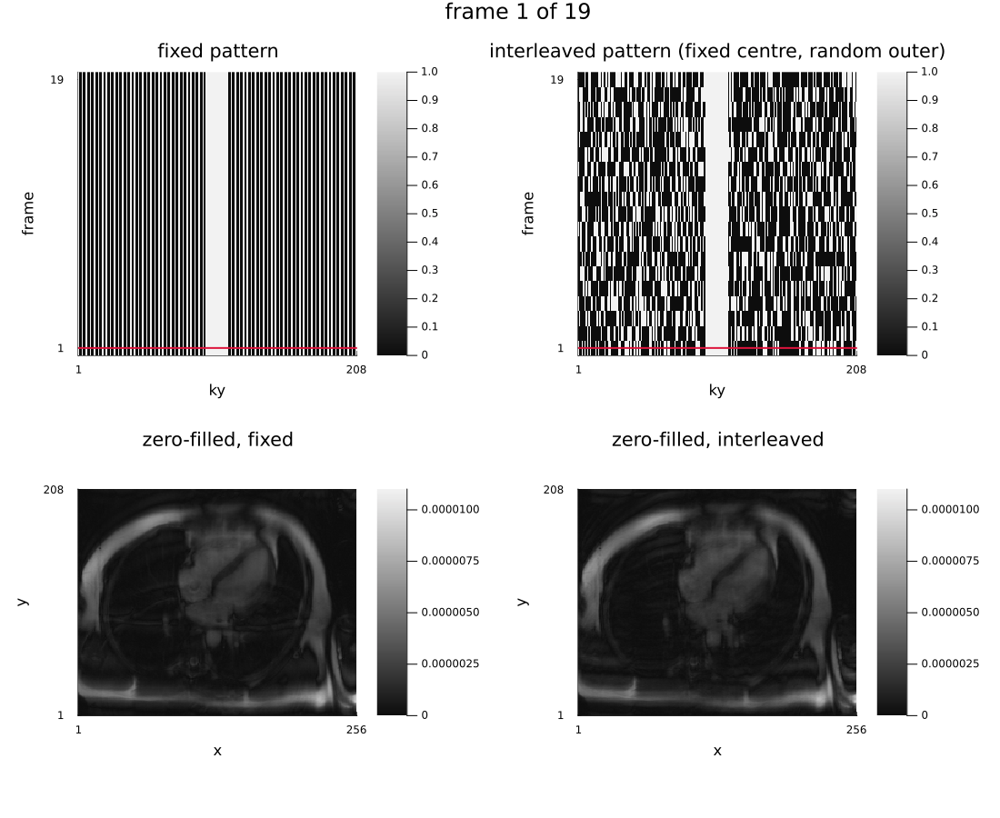
How the reconstructions are scored
Two numbers, both against the fully sampled reference of section 4, on magnitude, with the amplitude aligned (different reconstructions carry different scalings) :
- global — over the whole object. This is the number everyone quotes, and it is dominated by the static chest wall, which is most of the object and which every method reconstructs well.
- dynamic — over the pixels whose intensity varies most across the cardiac cycle (the top of the temporal-standard-deviation map: heart, vessels, diaphragm). This is the only region where a temporal or low-rank prior can differ from a frame-by-frame one at all, so it is the number that actually discriminates between the methods.
support = reference .> 0.1maximum(reference)
motion = dropdims(std(reference; dims = 3); dims = 3)
# The threshold is deliberately low. The temporal standard deviation peaks on the *myocardial
# wall*, where a bright muscle edge sweeps across a pixel and the intensity swings the whole way;
# the blood pool inside the ventricle changes much less from phase to phase, and a 25% threshold
# keeps only the wall and calls the chamber it encloses static. Ten percent takes in the cavity,
# the outflow tract and the vessels — the whole moving structure, which is what the dynamic score
# is supposed to be about.
dynamic = repeat(motion .> 0.1maximum(motion), 1, 1, nframes)
println("object pixels: ", sum(support), " dynamic pixels: ", sum(dynamic))
function scores(x̂)
a = abs.(unname(x̂))
α = sum(a[support] .* reference[support]) / sum(abs2, a[support])
a = α .* a
return (
global_err = norm(a[support] - reference[support]) / norm(reference[support]),
dynamic_err = norm(a[dynamic] - reference[dynamic]) / norm(reference[dynamic]),
)
end
for (name, x) in ("fixed" => x_zf_fixed, "interleaved" => x_zf_interleaved)
s = scores(x)
@printf("zero-filled %-12s global %.4f dynamic %.4f\n", name, s.global_err, s.dynamic_err)
endobject pixels: 275205 dynamic pixels: 147972
zero-filled fixed global 0.1744 dynamic 0.1928
zero-filled interleaved global 0.1761 dynamic 0.1891
cl_ref_masks = (0.0, maximum(reference))
# The two masks are what the scores are computed over, so they are worth seeing against the
# moving image rather than next to a single arbitrary frame: the dynamic mask should cover
# exactly what changes as the animation plays.
animate_frames(nframes; fps = 8) do t
jim(
jim(reference[:, :, t]; title = "reference (ESPIRiT + adjoint)", clim = cl_ref_masks),
jim(motion; title = "temporal standard deviation", clim = (0.0, maximum(motion))),
jim(Float32.(dynamic[:, :, t]); title = "dynamic-pixel mask", clim = (0.0f0, 1.0f0)),
jim(Float32.(support[:, :, t]); title = "object mask", clim = (0.0f0, 1.0f0));
layout = (2, 2), size = (1000, 860), plot_title = "frame $t of $nframes",
)
end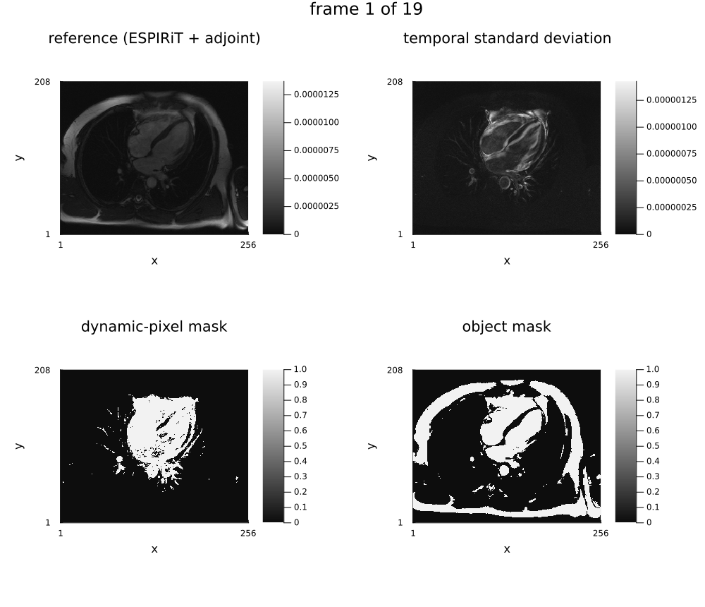
6. Choosing λ per method
Every method below is a different penalty on a different transform, so its λ lives on a different scale — nothing about "λ = 0.02" is comparable between L1Wavelet2D and LowRank. Comparing methods at a shared λ, or at whatever λ each one was first written with, mostly measures how lucky those choices were. So: a short log-spaced sweep per method, per pattern, and each method is reported at the λ that minimizes its dynamic error.
Three or four points is coarse: the best λ is accurate to a factor of ~3, which is enough to stop a method being shown at a grossly wrong setting but not enough to split hairs between two methods that land within a percent of each other. The brackets below are not arbitrary — they are the third iteration. The first pass used one shared decade per family, and five of the seven methods came back with their optimum sitting on an end point of their own grid, which means the search never bracketed the minimum and the number it reported was a bound, not an optimum. Each grid was recentred on that result; two of them (L2Image and L1TemporalFourier) came back on an end point a second time and had to be moved again. Then each grid was cut to the three points around its optimum, except for the two whose optimum lies between two grid points: on the fixed pattern TemporalTotalVariation scores the same at 3e-3 and 1e-2, and L+S has its best λ at 0.3 on one pattern and at 0.6 on the other. Every grid below has its minimum strictly inside it — you can check that yourself in the sweep numbers printed by the next cell. Always check it: an optimum at the edge of your sweep is not a result.
This cell is the expensive one — forty-six reconstructions, around eight minutes with two threads. Everything after it is cheap.
sweeps = (
"L2Image (per frame)" =>
([2.0e-2, 8.0e-2, 3.0e-1], λ -> IterativeReconstruction(L2Image(λ); maxit = 20)),
"L1Wavelet2D (per frame)" =>
([1.0e-3, 3.0e-3, 1.0e-2], λ -> IterativeReconstruction(L1Wavelet2D(λ); maxit = 30)),
"L1TemporalFourier" =>
([3.0e-4, 1.0e-3, 3.0e-3], λ -> IterativeReconstruction(L1TemporalFourier(λ; time_dim = :time); maxit = 30)),
"TemporalTotalVariation" =>
([3.0e-4, 1.0e-3, 3.0e-3, 1.0e-2], λ -> IterativeReconstruction(TemporalTotalVariation(λ; time_dim = :time); maxit = 30)),
"LowRank" =>
([1.0e-1, 3.0e-1, 1.0], λ -> IterativeReconstruction(LowRank(λ; time_dim = :time); maxit = 30)),
"LocallyLowRank" =>
([1.0e-2, 3.0e-2, 1.0e-1], λ -> IterativeReconstruction(LocallyLowRank(λ; block_size = 8, time_dim = :time); maxit = 30)),
# L+S has two knobs, not one. Sweeping both would be sixteen reconstructions per pattern, so
# the sparse weight is held at a value swept separately (a two-parameter grid, off to one
# side, over λ_L ∈ [1e-2, 2] × λ_S ∈ [1e-4, 3e-2]) and only λ_L is swept here. Tying the two
# at a fixed ratio — the obvious shortcut — does not work: at the λ_L this model actually
# wants, a ratio of 1/5 puts λ_S around 6e-2, which soft-thresholds S to *exactly zero* and
# quietly turns "L+S" into a plain `LowRank` run under another name. λ_S = 3e-3 is where the
# separate sweep put the minimum, and it leaves S non-zero on a few per cent of the voxels.
#
# The sparse term is a plain `L1Image`, which is what Otazo's L+S actually uses: an entrywise
# penalty on S in the image domain. A temporal-TV sparse term penalizes *change* rather than
# magnitude, which lets the constant part of the anatomy sit in S at no cost and pushes the
# motion into L — the two components then come out swapped, with L looking sparse and S
# looking low-rank.
"L+S (LowRank+L1Image)" =>
(
[1.0e-1, 3.0e-1, 6.0e-1, 1.0],
λ -> IterativeReconstruction(
Component(:lowrank, LowRank(λ; time_dim = :time)),
Component(:sparse, L1Image(3.0f-3));
maxit = 30
),
),
)
function sweep(acq)
return map(sweeps) do (label, (λs, build))
results = [(λ, reconstruct(acq, build(λ))) for λ in λs]
errs = [scores(x).dynamic_err for (_, x) in results]
best = argmin(errs)
@printf(
"%-24s best λ = %-8g dynamic %.4f (sweep: %s)\n",
label, results[best][1], errs[best],
join(map(e -> @sprintf("%.4f", e), errs), " ")
)
return label => (λ = results[best][1], x = results[best][2], errs = errs, λs = λs)
end
end
println("--- fixed pattern ---")
best_fixed = sweep(acq_fixed)
println("\n--- interleaved pattern ---")
best_interleaved = sweep(acq_interleaved);--- fixed pattern ---
L2Image (per frame) best λ = 0.08 dynamic 0.0937 (sweep: 0.1185 0.0937 0.1353)
L1Wavelet2D (per frame) best λ = 0.003 dynamic 0.0671 (sweep: 0.0778 0.0671 0.0807)
L1TemporalFourier best λ = 0.001 dynamic 0.0599 (sweep: 0.0733 0.0599 0.0739)
TemporalTotalVariation best λ = 0.003 dynamic 0.0664 (sweep: 0.1011 0.0796 0.0664 0.0665)
LowRank best λ = 0.3 dynamic 0.0732 (sweep: 0.0842 0.0732 0.0774)
LocallyLowRank best λ = 0.03 dynamic 0.0552 (sweep: 0.0703 0.0552 0.0749)
L+S (LowRank+L1Image) best λ = 0.3 dynamic 0.0705 (sweep: 0.0969 0.0705 0.0751 0.0724)
--- interleaved pattern ---
L2Image (per frame) best λ = 0.08 dynamic 0.1269 (sweep: 0.1645 0.1269 0.1500)
L1Wavelet2D (per frame) best λ = 0.003 dynamic 0.1031 (sweep: 0.1166 0.1031 0.1134)
L1TemporalFourier best λ = 0.001 dynamic 0.0695 (sweep: 0.0779 0.0695 0.0787)
TemporalTotalVariation best λ = 0.003 dynamic 0.0661 (sweep: 0.1280 0.0793 0.0661 0.0683)
LowRank best λ = 0.3 dynamic 0.0762 (sweep: 0.1117 0.0762 0.0779)
LocallyLowRank best λ = 0.03 dynamic 0.0646 (sweep: 0.0726 0.0646 0.0754)
L+S (LowRank+L1Image) best λ = 0.6 dynamic 0.0724 (sweep: 0.1062 0.0734 0.0724 0.0813)
7. The comparison, at each method's best λ
function summary_table(name, best, x_zf)
@printf("%s\n%-24s %9s %9s\n", name, "", "global", "dynamic")
s = scores(x_zf)
@printf("%-24s %9.4f %9.4f\n", "zero-filled", s.global_err, s.dynamic_err)
for (label, r) in best
s = scores(r.x)
@printf("%-24s %9.4f %9.4f (λ = %g)\n", label, s.global_err, s.dynamic_err, r.λ)
end
return println()
end
summary_table("FIXED pattern (same lines every frame)", best_fixed, x_zf_fixed)
summary_table("INTERLEAVED pattern (lines shift with frame)", best_interleaved, x_zf_interleaved)FIXED pattern (same lines every frame)
global dynamic
zero-filled 0.1744 0.1928
L2Image (per frame) 0.0561 0.0937 (λ = 0.08)
L1Wavelet2D (per frame) 0.0425 0.0671 (λ = 0.003)
L1TemporalFourier 0.0344 0.0599 (λ = 0.001)
TemporalTotalVariation 0.0404 0.0664 (λ = 0.003)
LowRank 0.0469 0.0732 (λ = 0.3)
LocallyLowRank 0.0334 0.0552 (λ = 0.03)
L+S (LowRank+L1Image) 0.0438 0.0705 (λ = 0.3)
INTERLEAVED pattern (lines shift with frame)
global dynamic
zero-filled 0.1761 0.1891
L2Image (per frame) 0.0910 0.1269 (λ = 0.08)
L1Wavelet2D (per frame) 0.0686 0.1031 (λ = 0.003)
L1TemporalFourier 0.0386 0.0695 (λ = 0.001)
TemporalTotalVariation 0.0404 0.0661 (λ = 0.003)
LowRank 0.0446 0.0762 (λ = 0.3)
LocallyLowRank 0.0421 0.0646 (λ = 0.03)
L+S (LowRank+L1Image) 0.0436 0.0724 (λ = 0.6)
plot(
plot(
[r.λs for (_, r) in best_fixed], [r.errs for (_, r) in best_fixed];
xscale = :log10, marker = :circle, lw = 2, xlabel = "lambda",
ylabel = "dynamic-region error", title = "lambda sweep, fixed pattern",
label = reshape([l for (l, _) in best_fixed], 1, :), legend = :outertopright
),
plot(
[r.λs for (_, r) in best_interleaved], [r.errs for (_, r) in best_interleaved];
xscale = :log10, marker = :circle, lw = 2, xlabel = "lambda",
ylabel = "dynamic-region error", title = "lambda sweep, interleaved pattern",
label = reshape([l for (l, _) in best_interleaved], 1, :), legend = :outertopright
);
layout = (2, 1), size = (1000, 800)
)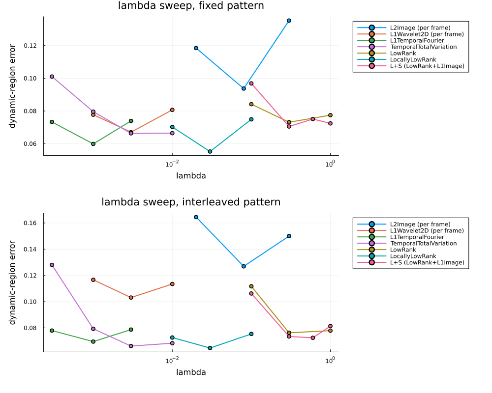
# Animated over the cardiac cycle rather than frozen on one frame: what separates these methods
# is temporal behaviour — over-smoothing, residual aliasing that moves — and a still frame is
# precisely where that hides. Every panel is locked to the reference's colour scale so the
# animation does not flicker and the panels stay comparable.
# Amplitude-aligned to the reference first, the same least-squares scaling `scores` uses, since
# different reconstructions come back on different scales and a shared colour limit would
# otherwise say more about the scaling than about the image.
align(a) = a .* (sum(a .* reference) / sum(abs2, a))
panels = (
("reference", reference),
("zero-filled", align(abs.(unname(x_zf_interleaved)))),
((label, align(abs.(unname(r.x)))) for (label, r) in best_interleaved)...,
)
cl_ref = (0.0, maximum(reference))
animate_frames(nframes; fps = 8) do t
jim(
(jim(p[:, :, t]; title = label, clim = cl_ref) for (label, p) in panels)...;
layout = (3, 3), size = (1200, 1000), plot_title = "frame $t of $nframes",
)
end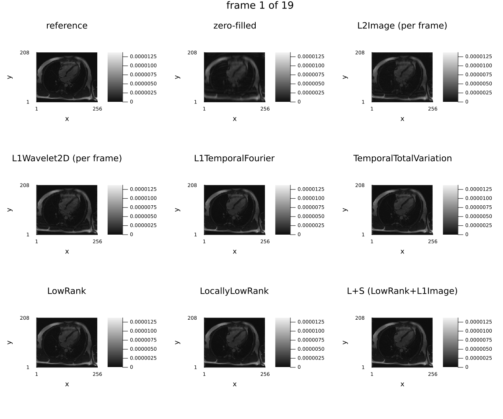
L+S is the one entry that reconstructs two images. It is worth opening up, because the split is the whole point of the model: the low-rank part should hold the static chest wall and the slowly varying background, and the sparse part should hold only what moves. If S looks like a faint copy of the whole anatomy rather than an outline of the heart, the two weights are wrong.
r_ls = best_interleaved[findfirst(((l, _),) -> startswith(l, "L+S"), best_interleaved)][2]
x_ls = r_ls.x
L, S = x_ls.components.lowrank, x_ls.components.sparse
L_mag, S_mag, LS_mag = abs.(unname(L)), abs.(unname(S)), abs.(unname(x_ls))
# A single frame cannot show what "low-rank" and "sparse" mean here — the split is a statement
# about time. Played as an animation, `L` should sit almost still while `S` flickers only where
# the heart moves. `S` needs its own colour scale — it is an order of magnitude weaker than `L`
# — and that scale is set from the *dynamic* pixels rather than from `S`'s global maximum, which
# sits on a rim of edge pixels at the top and bottom of the FOV. Scaling to that rim leaves the
# panel black and hides the thing the panel exists to show.
cl_ls = (0.0, maximum(LS_mag))
cl_s = (0.0, maximum(S_mag[dynamic]))
animate_frames(nframes; fps = 8) do t
jim(
jim(L_mag[:, :, t]; title = "L (low-rank background)", clim = cl_ls),
jim(S_mag[:, :, t]; title = "S (sparse dynamics)", clim = cl_s),
jim(LS_mag[:, :, t]; title = "L + S", clim = cl_ls);
layout = (1, 3), size = (1350, 480), plot_titlevspan = 0.1,
plot_title = "frame $t of $nframes",
)
end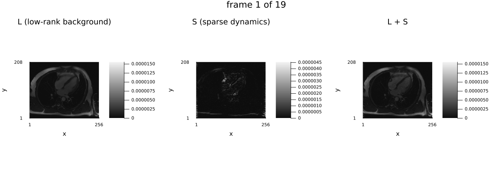
8. Timing, measured properly
A bare @elapsed around the first call to a reconstruction measures Julia compiling it, which on this problem is comparable to the solve itself. Warm the method up on a two-iteration run first, then time it, and take the best of two rather than a single number — wall-clock timings vary with whatever else the machine is doing, and the minimum is the least contaminated estimate of the work actually done. (BenchmarkTools.@benchmark does all of this properly and would be the right tool if these were microseconds; at tens of seconds per sample its statistics are unaffordable here.)
The times depend on the machine, on the thread count and, through the iteration count, on each method's λ. This page shows a table measured once at several thread counts, at the λ the sweep above picked for the interleaved pattern; the notebook measures them on your machine.
function best_of(f, n = 2)
f() # warm-up: compile everything
return minimum(@elapsed(f()) for _ in 1:n)
end
for (label, r) in best_interleaved
(_, build) = sweeps[findfirst(((l, _),) -> l == label, sweeps)][2]
t = best_of(() -> reconstruct(acq_interleaved, build(r.λ)))
@printf("%-24s %6.2f s (best of 2, after warm-up)\n", label, t)
endMeasured on 2026-10-15 on one AMD EPYC 7763 node with Julia 1.13.1, best of two after a warm-up, at λ = 0.08, 0.003, 0.001, 0.003, 0.3, 0.03 and 0.6 in the order of the rows:
| method | 1 thread | 4 threads | 16 threads |
|---|---|---|---|
| L2Image (per frame) | 5.49 s | 1.53 s | 0.82 s |
| L1Wavelet2D (per frame) | 11.31 s | 3.15 s | 1.54 s |
| L1TemporalFourier | 4.58 s | 2.11 s | 1.86 s |
| TemporalTotalVariation | 25.80 s | 8.76 s | 8.50 s |
| LowRank | 4.12 s | 5.15 s | 4.37 s |
| LocallyLowRank | 5.85 s | 2.12 s | 1.57 s |
| L+S (LowRank+L1Image) | 5.56 s | 6.21 s | 6.47 s |
The per-frame methods are the fast ones for a structural reason, not an implementation one: a purely spatial regularizer leaves :time a batch dimension, so reconstruct splits the problem into nframes independent solves and runs them in parallel (tutorial 7, section 5). A temporal or low-rank penalty couples the frames, so there is one large problem instead, and how much it gains from threads depends on its operators: LocallyLowRank works on independent blocks and still scales, while LowRank and L+S gain nothing from threads on this problem.
9. The temporal profile
A y–t cut through the heart is the standard way to look at a cine reconstruction: temporal blurring and residual aliasing that are invisible in a single frame show up immediately as smearing or as banding along the time axis.
col = argmax(vec(sum(motion; dims = 1)))
println("profiling column ", col)
profile_methods = ("L1Wavelet2D (per frame)", "TemporalTotalVariation", "L+S (LowRank+L1Image)")
profiles = (
"reference" => reference[:, col, :],
"zero-filled" => abs.(unname(x_zf_interleaved))[:, col, :],
(
m => abs.(unname(best_interleaved[findfirst(((l, _),) -> l == m, best_interleaved)][2].x))[:, col, :]
for m in profile_methods
)...,
)
jim(
(jim(p; title = label, aspect_ratio = :auto) for (label, p) in profiles)...;
layout = (2, 3), size = (1400, 800)
)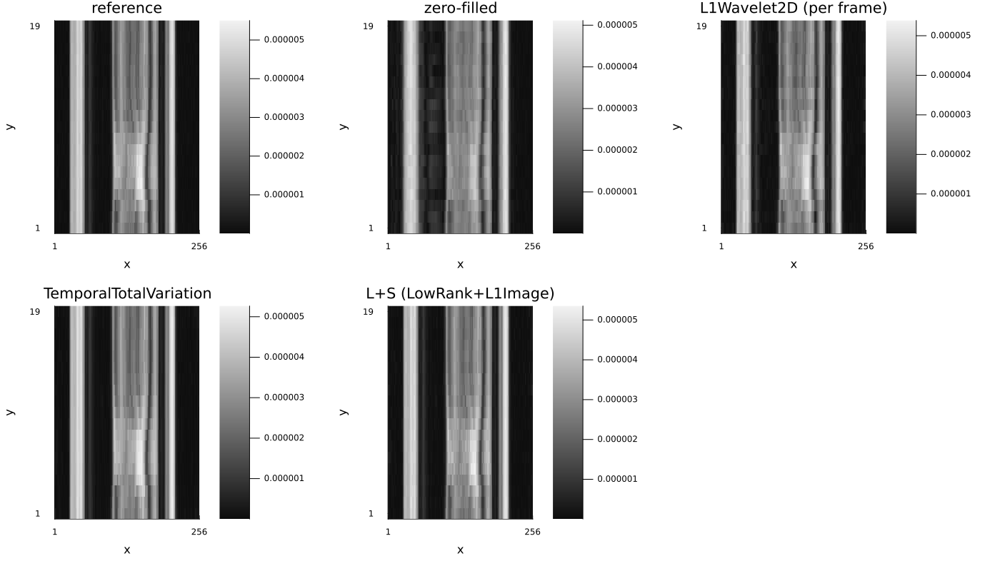
# And the intensity of one voxel through the cardiac cycle.
row = argmax(vec(sum(motion; dims = 2)))
plot(
reference[row, col, :]; label = "reference", lw = 3, xlabel = "cardiac phase", ylabel = "|x|",
size = (850, 420), title = "voxel ($row, $col) through the cycle", legend = :outertopright
)
for (label, p) in profiles
label == "reference" && continue
a = p[row, :]
α = sum(a .* reference[row, col, :]) / sum(abs2, a)
plot!(α .* a; label = label, lw = 2)
end
plot!()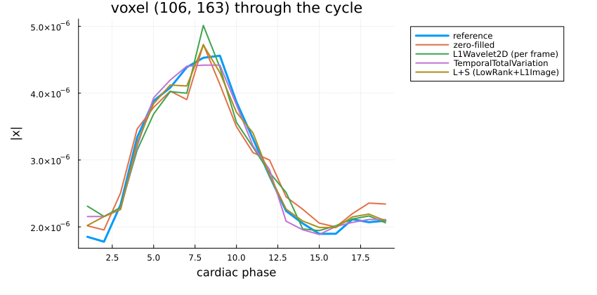
10. Real non-Cartesian data: a spiral real-time scan
Everything above is Cartesian, because this cine is. Rather than synthesize a radial trajectory out of it — which would exercise Ristretto's NFFT path but not a non-Cartesian acquisition — this section switches datasets and reads a real spiral scan, acquired the way real-time imaging is actually done.
The data is one 2D real-time vocal-tract scan from the USC SPAN 75-speaker corpus — a speaker reading the "North Wind and the Sun" passage: GE Signa Excite 1.5 T, 8-channel upper-airway array, 13-interleaf spiral-out spoiled gradient echo, 84 × 84 on a 200 mm FOV, TR 6 ms. It is a continuous stream of spiral arms rather than a gated cine, which is what makes it the right dataset here: the frame rate is a reconstruction choice, not a property of the file. Bin thirteen arms and you get a fully sampled frame every 78 ms; bin fewer and you get a faster, undersampled one.
Two choices about which arms to bin, both of which matter more than they look:
- The scan does not start at steady state. The first excitations see unsaturated magnetization, so the opening frames are far brighter than the rest and decay towards the steady state over roughly the first twenty frames — measured on this file, frame energy runs 2.17, 1.71, 1.57, 1.36, … times the series median before flattening out. Left in, that decay is the dominant temporal variation, and every temporal statistic below — the standard deviation the dynamic mask is built from, the temporal Fourier transform, the rank of the series — would describe relaxation rather than speech. The window therefore starts well past the approach to steady state.
- A 24-frame window is 1.9 s, and a read passage contains pauses. Windows were scored by the temporal standard deviation inside the object, normalized by its mean; this one sits at the maximum of that score, so the tongue, jaw and velum are moving throughout it.
Data terms. USC SPAN is CC-BY 4.0 (figshare 13725546) and asks that you cite Lim et al., A multispeaker dataset of raw and reconstructed speech production real-time MRI video and 3D volumetric images, Scientific Data 8, 187 (2021).
MRITestDatarange-extracts the single.h5member out of the corpus archive, so this adds a ~60 MB download.
AcquisitionInfo(raw) reads this file — it assembles non-Cartesian data from the profiles themselves — but what it returns is (:sample, :readout, :coil) with all 2703 profiles on one readout axis, because nothing in the header separates the frames: this exporter increments the repetition counter once per profile, not once per frame, so there is no counter to bin by. Which thirteen arms make a frame is the reconstruction choice this section is about, so the three arrays are assembled by hand here. That is a few lines, and it shows exactly what a NonCartesianAcquisitionInfo is made of:
- k-space
(:sample, :interleaf, :coil, :time)— the measured samples. - trajectory
(:coord, :sample, :interleaf)— where each sample sits, in $[-0.5, 0.5)$. Its sample dimensions must match the leading dimensions of the k-space array, which is what ties the two together and why:timecomes last. - dcf
(:sample, :interleaf)— density-compensation weights, which this file ships: the third row of the MRD trajectory table is the vendor's own weighting, rising from 0 at the centre of k-space to 1 at the edge. Without it the adjoint counts the centre thirteen times over and returns a blurred image (08_non_cartesian.md§3–§4).
Each profile is one interleaf, tagged in idx.kspace_encode_step_1, and they arrive in a scrambled order (12, 3, 10, 0, …) that repeats every 13.
entry_spiral = MRITestData.dataset(MRITestData.USC_SPEECH, "sub054/2drt/09_northwind1_r1")
raw_spiral = MRITestData.load_raw(entry_spiral)
narms = 13
nsamp_sp = Int(raw_spiral.profiles[1].head.number_of_samples)
nchan_sp = size(raw_spiral.profiles[1].data, 2)
nx_sp, ny_sp = Int.(raw_spiral.params["encodedSize"])[1:2]
nframes_sp = 24
frame0_sp = 104 # frames 105:128, past the approach to steady state
function spiral_frame(f)
g = f + frame0_sp
ps = raw_spiral.profiles[((g - 1) * narms + 1):(g * narms)]
ps = ps[sortperm([Int(p.head.idx.kspace_encode_step_1) for p in ps])]
ksp = Array{ComplexF32}(undef, nsamp_sp, narms, nchan_sp)
traj = Array{Float32}(undef, 2, nsamp_sp, narms)
dcf = Array{Float32}(undef, nsamp_sp, narms)
for (a, p) in enumerate(ps)
ksp[:, a, :] .= ComplexF32.(p.data)
traj[:, :, a] .= Float32.(p.traj[1:2, :])
dcf[:, a] .= Float32.(p.traj[3, :])
end
return ksp, traj, dcf
end
_, traj_sp, dcf_sp = spiral_frame(1)
traj_spiral = NamedDimsArray{(:coord, :sample, :interleaf)}(traj_sp)
dcf_spiral = NamedDimsArray{(:sample, :interleaf)}(dcf_sp)
ksp_spiral = Array{ComplexF32}(undef, nsamp_sp, narms, nchan_sp, nframes_sp)
for f in 1:nframes_sp
ksp_spiral[:, :, :, f] .= spiral_frame(f)[1]
end
println(
"frames ", frame0_sp + 1, ":", frame0_sp + nframes_sp, " — ", nframes_sp, " x ", narms,
" interleaves x ", raw_spiral.params["TR"], " ms = ",
round(nframes_sp * narms * raw_spiral.params["TR"] / 1000, digits = 2), " s of speech at ",
round(1000 / (narms * raw_spiral.params["TR"]), digits = 1), " frames/s"
)
# The approach to steady state, straight off the raw profiles: total k-space energy per frame,
# relative to the frame the reconstruction window starts at. No image needed to see it.
frame_energy(g) = sqrt(
sum(p -> sum(abs2, p.data), @view raw_spiral.profiles[((g - 1) * narms + 1):(g * narms)])
)
energy_ref = frame_energy(frame0_sp + 1)
println(
"k-space energy of frames 1:8, relative to frame ", frame0_sp + 1, ": ",
round.([frame_energy(g) / energy_ref for g in 1:8], digits = 2)
)frames 105:128 — 24 x 13 interleaves x 6.004 ms = 1.87 s of speech at 12.8 frames/s
k-space energy of frames 1:8, relative to frame 105: Float32[2.36, 1.81, 1.67, 1.43, 1.42, 1.36, 1.31, 1.27]
The reference movie, and maps from spiral data
Sorting each block of thirteen by its interleaf counter makes every frame present its arms in the same order, so the whole series shares one trajectory and stacks into a single dense acquisition with a :time dimension — which is what lets a temporal regularizer run on it at all.
estimate_sensitivities takes the non-Cartesian acquisition directly: every estimator reads a calibration window out of a Cartesian grid, which spiral samples are not, so it grids first — an NFFT adjoint weighted by the acquisition's own density compensation (the vendor's weights, which this file ships), back to Cartesian k-space, then ESPIRiT. The :time axis is averaged over before calibration, which is its default and is right here for the reason it was wrong for the cine in section 3: the vocal tract moves within a handful of frames while the coils do not, and averaging suppresses the noise a single 78 ms frame carries. Pass average_dims = () for one set of maps per frame.
acq_spiral_series = AcquisitionInfo(
NamedDimsArray{(:sample, :interleaf, :coil, :time)}(ksp_spiral);
trajectory = traj_spiral, dcf = dcf_spiral, image_size = (nx_sp, ny_sp),
)
acq_spiral_full = estimate_sensitivities(
acq_spiral_series; method = ESPIRiT(calib_size = 24, kernel_size = 6)
)
maps_spiral = acq_spiral_full.sensitivity_maps
println("maps: ", size(maps_spiral), " ", dimnames(maps_spiral))
reference_sp = abs.(unname(reconstruct(acq_spiral_full)))
println("reference: ", size(reference_sp), " (13 arms, maps + adjoint)")
animate_slices(
reference_sp; dim = 3, fps = 8, size = (440, 420),
title = t -> "13 arms/frame, $t of $nframes_sp",
)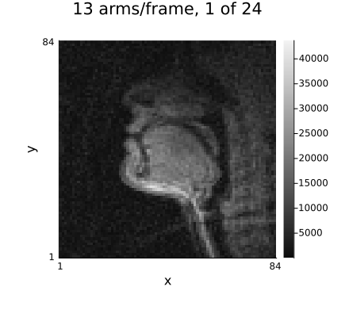
Buying frame rate by dropping arms
Undersampling a spiral means acquiring fewer interleaves per frame, and unlike every retrospective Cartesian mask above this is a real acceleration: three arms instead of thirteen is 4.3× fewer samples and an 18 ms frame instead of a 78 ms one, which for real-time speech is the difference between blurring a consonant and resolving it.
The three arms are the same three in every frame, which is what keeps one trajectory for the whole series. A real 3-arm real-time scan would instead let the arms rotate — consecutive blocks of three out of the thirteen — so that each frame samples k-space differently, exactly the incoherence the interleaved Cartesian pattern of section 5 was built for. A NonCartesianAcquisitionInfo can express that — a trajectory with a trailing :time axis gives every frame its own arms (see "Per-frame trajectories" in the acquisition docs) — but this dataset cannot supply it: USC_SPEECH stores 13 arms per 13-arm period, and binning rotating blocks of three into frames would re-slice the timing of the recorded series. The three fixed arms keep the comparison below on the scan as it was acquired.
Each method gets the same three-point λ sweep as section 6, reported at its own best dynamic error. The dynamic mask is built the same way too, from the temporal standard deviation — on this data it selects the tongue, lips and velum rather than the static skull.
arms = [1, 6, 11]
acq_spiral_us = AcquisitionInfo(
NamedDimsArray{(:sample, :interleaf, :coil, :time)}(ksp_spiral[:, arms, :, :]);
trajectory = traj_spiral[interleaf = arms], dcf = dcf_spiral[interleaf = arms],
image_size = (nx_sp, ny_sp), sensitivity_maps = maps_spiral,
)
println(
"keeping ", length(arms), " of ", narms, " interleaves (",
round(narms / length(arms), digits = 2), "x, ",
round(length(arms) * raw_spiral.params["TR"], digits = 1), " ms per frame, ",
round(1000 / (length(arms) * raw_spiral.params["TR"]), digits = 1), " frames/s)"
)
support_sp = reference_sp .> 0.1maximum(reference_sp)
motion_sp = dropdims(std(reference_sp; dims = 3); dims = 3)
# The threshold is 30% here where the cine used 10%, and it is intersected with the object mask.
# Both changes are about this dataset rather than about a better rule: a real-time frame is far
# noisier than a breath-held cine one, so the temporal standard deviation of pure background
# clears a 10% threshold in places, and speech moves a *larger fraction* of the object than a
# heartbeat does — at 10% the "dynamic" mask covers the object and the two scores stop being
# different measurements. At 30% it is the tongue, the oral cavity and the pharyngeal wall.
dynamic_sp = repeat(motion_sp .> 0.3maximum(motion_sp), 1, 1, nframes_sp) .& support_sp
println("object pixels: ", sum(support_sp), " dynamic pixels: ", sum(dynamic_sp))
function scores_sp(x̂)
a = abs.(unname(x̂))
α = sum(a[support_sp] .* reference_sp[support_sp]) / sum(abs2, a[support_sp])
a = α .* a
return (
global_err = norm(a[support_sp] - reference_sp[support_sp]) / norm(reference_sp[support_sp]),
dynamic_err = norm(a[dynamic_sp] - reference_sp[dynamic_sp]) / norm(reference_sp[dynamic_sp]),
)
endscores_sp (generic function with 1 method)sweeps_sp = (
"L1Wavelet2D (per frame)" =>
([1.0e-2, 3.0e-2, 1.0e-1], λ -> IterativeReconstruction(L1Wavelet2D(λ); maxit = 40)),
"L1TemporalFourier" =>
([1.0e-3, 3.0e-3, 1.0e-2], λ -> IterativeReconstruction(L1TemporalFourier(λ; time_dim = :time); maxit = 40)),
"LowRank" =>
([3.0e-1, 1.0, 3.0], λ -> IterativeReconstruction(LowRank(λ; time_dim = :time); maxit = 40)),
)
x_sp_adjoint = reconstruct(acq_spiral_us)
s = scores_sp(x_sp_adjoint)
@printf("%-24s %9s %9s\n", "SPIRAL, 3 of 13 arms", "global", "dynamic")
@printf("%-24s %9.4f %9.4f\n", "adjoint + DCF", s.global_err, s.dynamic_err)
best_spiral = map(sweeps_sp) do (label, (λs, build))
results = [(λ, reconstruct(acq_spiral_us, build(λ))) for λ in λs]
errs = [scores_sp(x).dynamic_err for (_, x) in results]
b = argmin(errs)
s = scores_sp(results[b][2])
@printf(
"%-24s %9.4f %9.4f (λ = %g, sweep: %s)\n",
label, s.global_err, s.dynamic_err, results[b][1],
join(map(e -> @sprintf("%.4f", e), errs), " ")
)
return label => results[b][2]
end;SPIRAL, 3 of 13 arms global dynamic
adjoint + DCF 0.3279 0.2509
L1Wavelet2D (per frame) 0.2969 0.2012 (λ = 0.03, sweep: 0.2189 0.2012 0.2118)
L1TemporalFourier 0.3024 0.2110 (λ = 0.01, sweep: 0.2331 0.2169 0.2110)
LowRank 0.2921 0.2107 (λ = 3, sweep: 0.2364 0.2179 0.2107)
All three land within a few per cent of each other, and the order the cine produced is gone: the per-frame wavelet comes out ahead of both temporal models here, and every one of the three is a clear improvement on the density-compensated adjoint. Low-rank being competitive is the expected part: a vocal tract moving through a handful of articulator positions is close to literally low-rank — a few spatial patterns whose weights change with time — which is the modelling assumption real-time speech reconstructions have been built on since Liang's partially separable functions. What keeps it from winning is that 1.9 s of a read passage is not a handful of postures: the tongue is moving through most of the window, so the series is low-rank in the sense of decaying singular values, not of a small exact rank, and the same holds for a sparse temporal spectrum. The wavelet, meanwhile, has an easy job on this anatomy — a vocal tract is mostly flat tissue against black air, which is as close to piecewise-constant as real anatomy gets — and it gets three arms of spiral per frame, whose aliasing is incoherent noise-like structure rather than the coherent ghost a Cartesian mask leaves.
Two things the numbers do not say on their own. The reference here is a 78 ms frame, so it is itself blurred by any articulation faster than that — the score measures agreement with a slower movie, not with the truth, and a method that sharpened a moving tongue correctly would be penalized for it. And every method is scored at 4.3× on data whose fully sampled frame rate was already usable; the reason to accelerate here is to resolve faster speech, which is a question this comparison cannot answer because the reference cannot see it either.
align_sp(a) = a .* (sum(a .* reference_sp) / sum(abs2, a))
cl_sp = (0.0, maximum(reference_sp))
panels_sp = (
("reference (13 arms)", reference_sp),
("3 arms, adjoint + DCF", align_sp(abs.(unname(x_sp_adjoint)))),
((label, align_sp(abs.(unname(x̂)))) for (label, x̂) in best_spiral)...,
)
animate_frames(nframes_sp; fps = 8) do t
jim(
(jim(p[:, :, t]; title = label, clim = cl_sp) for (label, p) in panels_sp)...;
layout = grid_layout(length(panels_sp)), size = (1250, 760),
plot_title = "frame $t of $nframes_sp",
)
end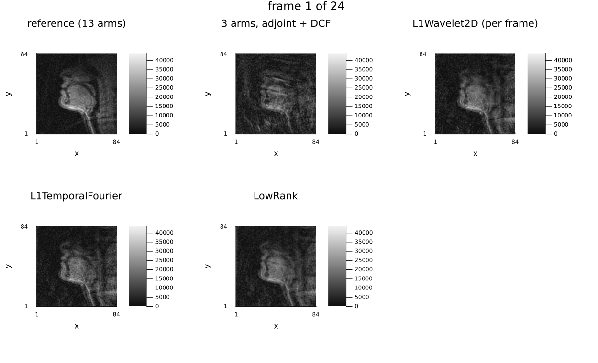
11. What actually wins, and when
Read the dynamic-region columns of the two summary tables above — each method at its own best λ — rather than a table copied into this cell, which would go stale the moment any λ grid or sampling pattern changed. Four things are worth taking away from them, and one is a caveat about this tutorial itself.
The sampling pattern decides the ranking, not the regularizer. Interleaving leaves the zero-filled error about where it was, but changes its character: the aliasing is no longer a single coherent ghost but noise-like structure that moves frame to frame. That makes both per-frame methods a third to a half worse — they see each frame alone, and each frame is now harder. The temporal and low-rank models lose far less, at most a sixth and TemporalTotalVariation nothing, because what each frame lost in conditioning they recover along time; the per-frame wavelet falls from fourth place to sixth. That shift is the whole argument for time-varying sampling, and it is visible here as a table rather than as an assertion.
Global error hides all of this. Compare the two columns of the summary tables: global error is dominated by the static chest wall, which every method reconstructs well, and it compresses the spread between the temporal models to a few thousandths. The dynamic-region column is where the models actually differ. Reporting only a whole-image NRMSE would have made this comparison look like a tie.
The best method is not the most expensive one. LocallyLowRank wins on both patterns, for a fifth to a quarter of the time TemporalTotalVariation takes (section 8). L+S, the most elaborate model here, costs up to half again as much as LowRank alone, trails TemporalTotalVariation on the fixed pattern and is beaten by both on the interleaved one. Against all of them, per-frame L1Wavelet2D runs in seconds on a multi-core machine and lands some 20% behind the winner on the fixed pattern and some 60% behind on the interleaved one: a real gap where the sampling gives the temporal models something to exploit, and a small one where it does not. If a hundred slices have to be reconstructed by tomorrow, the wavelet is the rational choice. The temporal models earn their cost when the acceleration is high enough that the per-frame problem is not solvable at all — which is a claim about R = 6–10, and not something this tutorial measured.
The caveat: a two-knob model needs a two-knob search, and L+S is the cautionary tale. An earlier version of this tutorial tied its two weights at a fixed ratio and swept them as one parameter, which is the obvious way to keep the sweep affordable. It was wrong in a way that flattered the method rather than penalizing it: at the λL the model wants, the tied λS is large enough to soft-threshold S to exactly zero, so the row labelled "L+S" was a plain LowRank reconstruction with an extra variable that never left the origin — and it duly scored within a thousandth of the LowRank row, which should have been the clue.
Swept properly (λL and λS independently, off to one side), the best pair leaves S non-zero on a few per cent of the voxels and L holding ~99.7% of the energy — a decomposition that is actually a decomposition — and it buys very little: a gain of 4–5% over LowRank alone (0.0705 against 0.0732 on the fixed pattern, 0.0724 against 0.0762 on the interleaved one), for up to half again the runtime of LowRank. That is the honest result, and it is not a paradox: at R ≈ 2.6 with a single slice the low-rank model already explains most of the cine, and giving the fit a second, sparser way to explain the same data mostly lets it put residual noise there instead. L+S earns its second term at higher acceleration and with a genuinely sparse dynamic component — contrast uptake, a bolus — and this dataset has neither.
The general lesson is the one the tutorial opens with, one level up: an under-searched method looks like a bad method, and a method searched along the wrong axis can look like a good one.
Further reading
From Questions and Answers in MRI:
- Real-time cine — the acquisition this data comes from, and the acceleration factors it runs at.
- Radial sampling and Spiral imaging — why non-Cartesian trajectories suit dynamic imaging, and what they cost.
- Compressed sensing — the reconstruction side of the same bargain.
Environment
print_versions()Julia Version 1.13.3
Commit 67ac47b9cd8 (2026-10-25 15:28 UTC)
Build Info:
Official https://julialang.org release
Platform Info:
OS: Linux (x86_64-linux-gnu)
CPU: 4 × AMD EPYC 7763 64-Core Processor
WORD_SIZE: 64
LLVM: libLLVM-20.1.8 (ORCJIT, znver3)
GC: Built with stock GC
Threads: 4 default, 1 interactive, 4 GC (on 4 virtual cores)
Environment:
JULIA_PKG_SERVER_REGISTRY_PREFERENCE = eager
JULIA_NUM_THREADS = 4
Ristretto 0.1.0 (dev)
AbstractOperators not loaded
FFTWOperators not loaded
NFFTOperators not loaded
WaveletOperators not loaded
DSPOperators not loaded
ContourletOperators not loaded
StructuredOptimization not loaded
ProximalOperators not loaded
ProximalAlgorithms not loaded
OperatorCore not loaded
NestedThreading 0.1.3